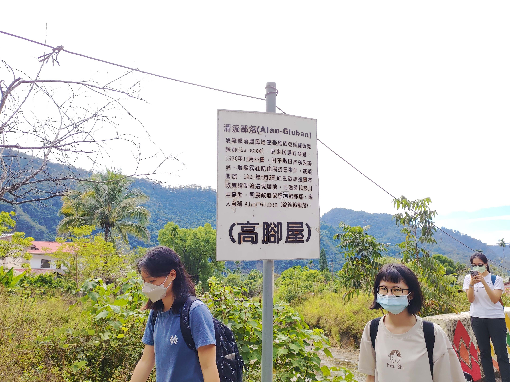
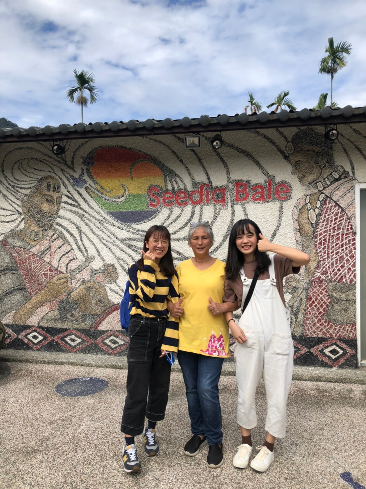

部落簡介
Introduction to Alang gluban

清流部落，一個位於南投縣仁愛鄉的小村落，該地的居民均屬於泰雅族亞族賽德克族群，世代祖先原本居住在霧社地區，直至1930年10月27日，因不堪日本人暴政統治，爆發了震驚國際的霧社事件。1931年5月6日，餘生者們遭強制搬遷至此，當時仍是荒涼之地，日本政府稱為「川中島社」。國民政府光復後，改稱為「清流部落」，而族人們則自稱Alan-Gluban（谷路邦部落）。
清流部落在日治時期稱為「川中島社」，雖以「島」為名，但該地卻非為小島。由於當地是兩條河流、加上中央地帶又有一條族人們稱為「阿比斯溪」的小溪貫穿，共被三條溪流包圍，依其「三溪呈川」的地理特徵，故稱「台中州川中島社」。國民政府光復後，看見北港溪清澈之溪流，認為此地是一好地方，才改為「清流部落」。
「清流部落的先人們皆處於身心疲憊之際，猶能忍辱負重，辛勤開墾荒涼之地，以堅持族人的精神與傳承」，才有現在的清流部落及文化保留下來……
心得感想
My thoughts

▲與賽德克族人－瑪姮·巴丸女士合照(攝於2021年11月20日)
大眾對於「賽德克族」或「霧社事件」一點都不陌生，但對於「清流部落」大多是一知半解，不然就是從未聽聞。其實在前往「清流部落共學工作坊」之前，我也是從未聽聞，但在真正瞭解、以及體驗一場徹底的文化盛宴後，當我再看到過去所遺留下的歷史痕跡，就馬上會聯想到霧社事件餘生者們咬牙苦撐、用心耕耘的點點滴滴，因而有所感觸。
為防止後代子孫因電影手法渲染而對歷史產生誤解、或身分認同感到錯亂，部落耆老、居民共同努力振興，這樣的精神使我感到佩服。也許傳統文化保存在經濟發展上不是必要，但我覺得不該遺失舊有文化，政府應好好重視文化資產保存，將在地特色推向國際，共同讓世界看見賽德克族的文化經典，也看見台灣之美。